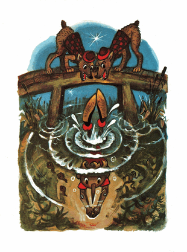

Si rubah Alisa mengira bahwa Buratino akan pergi tidur, ternyata dia masih terduduk di atas tumpukan sampah, dengan sabarnya menjepit hidung.
Lantas Alisa menyuruh si kucing untuk tetap mengawasi, sementara dia bergegas ke kantor polisi terdekat.
Di sana, di dalam ruangan yang dipenuhi asap rokok, yang berceceran noda tinta, perwira bulldog sedang mendengkur tebal.
Si rubah berkata kepadanya dengan sangat manis:
- Juragan perwira yang gagah berani, berkenankah anda menangkap seorang pencopet gelandangan? Bahaya mengerikan sedang mengancam warga-warga kaya dan terpandang di kota ini.
Perwira bulldog itu terperanjat menggonggong, hingga rasa takut bermuara di bawah kaki si rubah.
- Maling! Gonggonggong!
Si rubah menjelaskan, bahwa si maling berbahaya /-Buratino/ ditemukan di lapangan sampah.
Perwira itu terus-terusan menggonggong, memanggil. Menggeruduklah dua ekor doberman-pelacak, detektif-detektif yang tampaknya tidak pernah tidur, tak percaya siapa pun, dan bahkan mencurigai diri sendiri terlibat kasus kejahatan.
Perwira itu memerintahkan mereka untuk menyeret penjahat berbahaya itu ke kantor polisi hidup atau mati.
Detektif-detektif itu menjawab singkat:
- Guk!
Kemudian mereka berpacu menuju lapangan sampah dengan pacu andalan, kaki belakang serong-menyerong ke samping.
Pada seratus langkah terakhir, mereka merayap di perut mereka dan serentak menyergap Buratino, dipiting di ketiak dan diseret ke kantor polisi.
Buratino terseok-seok memohon dengan berkata; -salahku apa? salahku apa?- Detektif-detektif itu menjawab:
- Jelaskan saja di kantor polisi...
Si rubah dan si kucing, tanpa buang-buang waktu, menggali empat koin emas itu. Si rubah membagi koin itu dengan licik, si kucing kebagian satu koin, dia sendiri tiga.
Si kucing ancang-ancang mencabik moncong si rubah.
Si rubah sekuat tenaga menangkis cakar si kucing. Dan tidak lama kemudian mereka berguling-guling di lapangan sampah. Bulu-bulu si kucing dan si rubah melayang-layang berterbaran diterpa sinar rembulan.
Setelah saling mengoyak satu sama lain, mereka membagi koin itu sama rata dan menghilang dari kota pada malam itu juga.
Sementara itu, dua detektif telah membawa Buratino ke kantor polisi.
Perwira bulldog beranjak dari meja lalu menggeledah saku-sakunya.
Dia tidak menemukan apa pun, selain sebutir gula dan remah-remah kue almond, perwira itu naik darah dan mendengus pada Buratino:
- Kau melakukan tiga kejahatan, berengsek; kau gelandangan, tak punya KTP, dan pengangguran. Singkirkan dia dari kota, ceburkan ke rawa!
Detektif-detektif itu menjawab:
- guk!
Buratino berusaha menjelaskan tentang papa Carlo, tentang petualangannya... Semua sia-sia! Detektif-detektif itu memitingnya, berpacu menyeretnya keluar dari kota lalu melemparkannya dari atas jembatan ke rawa keruh yang dalam, yang dipenuhi katak, lintah dan larva kumbang air.
Buratino tercebur ke dalam air, dan lumut hijau merungkup di atasnya.
